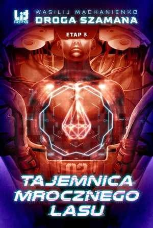
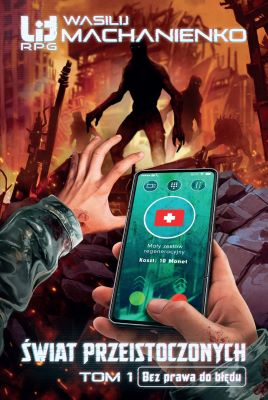

Ciąg dalszy przygód Szamana Machana. Udało mu się uniknąć najgorszego, co nie znaczy, że może narzekać na nudę. Pozornie sielankowe miasteczko Kołotowka skrywa bowiem mroczną tajemnicę, która na zawsze odmieni świat Barliony - nie tylko dla niego, ale dla wszystkich graczy.
Machan przyciąga do siebie przygody jak magnes metal. Tym razem musi wraz z nowo utworzonym klanem wyruszyć do Mrocznego Lasu, aby odkryć kto stoi za zaginięciem kapłanów bogini Eluny. Czy winne są żyjące w lesie wampiry? Jaką rolę w misji odegrają dwa największe klany gry - Feniks i Mroczny Legion? I czy Machan oprze się ciemnej stronie Szamanizmu?
Świat Przeistoczonych to nowa gra mobilna, która podbiła świat. Rzesze jej fanów z niecierpliwością czekają na Godzinę X - wydanie pełnej wersji gry. Czy jednak są gotowi stawić czoła wyzwaniom, które gra rzuci mieszkańcom prawdziwego świata?
Powrót na górę strony